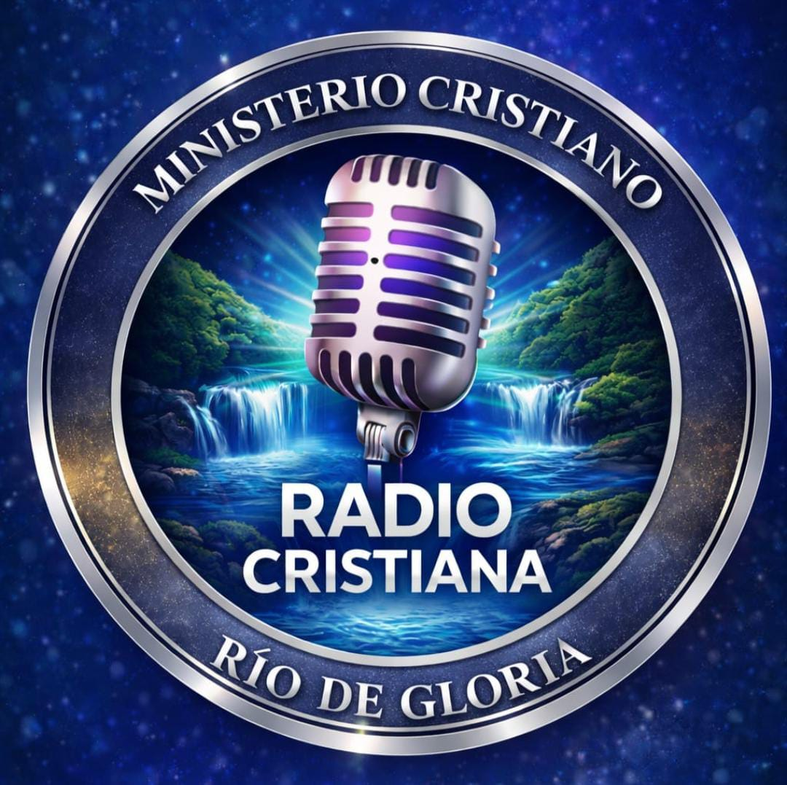

Un lugar para buscar la presencia de Dios, escuchar su palabra y crecer juntos en la fe.

Somos una iglesia dedicada a compartir la palabra de Dios, la adoración y la oración. Nuestro deseo es que cada persona pueda acercarse a Dios y encontrar fortaleza, restauración y esperanza en Él.
Nuestro lema: “Solo tu alma de su presencia”.

Con amor y compromiso, trabajan en la enseñanza de la palabra, la oración y el cuidado espiritual de la congregación.

Música, palabra, adoración y programación cristiana para acompañarte donde quiera que estés.
▶ Escuchar ahoraAlgunos momentos de nuestros cultos y actividades.


San Salvador, El Salvador
Escríbenos directamente.
Contáctanos por correo electrónico.